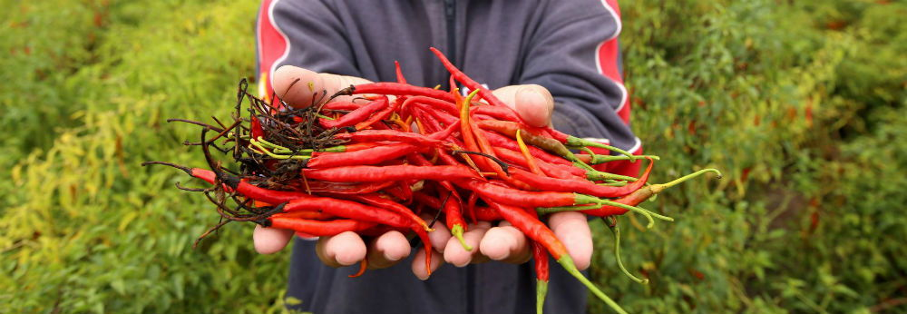

Chile de arból
Su picor, aroma y textura lo hacen único en todo el país, el chile de Yahualica no solo es el favorito para cientos de platillos es un producto que le da identidad a Jalisco, en especial a 11 municipios que lo producen, procesan, comercializan y exportan con el respaldo oficial debido que desde el 2018 tiene denominación de origen.
La peculiaridad del chile de árbol se debe, en gran parte, a que es cultivado desde hace décadas en los campos de Los Altos, una región semiárida, donde la tierra es rica en hierro y minerales. Una de las características más importantes de este chile es el sabor, ya que su picor no lastima o arde, es más bien gustoso que además no hace daño al estómago o provoca taquicardias.
Este fruto picante tiene dos ciclos de cultivo, en primavera y en otoño. Su cultivo, a través del cual se obtiene el fruto que se comercia en estado seco, pasa por catorce etapas: producción de plántula; preparación de terreno para el trasplante; determinación de la densidad de población; trasplante; riego; fertilización; labores de cultivo durante el riego; combate y control de malezas; manejo fitosanitario; cosecha; selección de semilla para el siguiente ciclo; deshidratado o secado del fruto; clasificación; y empacado.
